6A
https://elt.oup.com/student/englishfile/beginner3/grammar/file06/grammar06_a01
https://elt.oup.com/student/englishfile/beginner3/grammar/file06/grammar06_a02
https://elt.oup.com/student/englishfile/beginner3/pronunciation
6.1 / V 124 - Jobs and places of work - What do they do?
° jobs ° places ° factory
:
1: a teacher 2: a doctor 3: a nurse
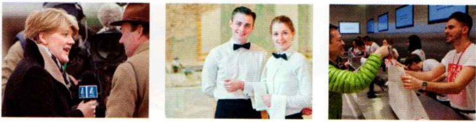
:
4: a journalist 5: a waiter / a waitress 6: a shop assistant
:
7: a receptionist 8: a policeman / a policewoman
:
9: a factory worker 10: a taxi driver
6.2 / V 124 - What do you do?
° economics ° unemployed ° at the moment ° retired
I work for an American company. I’m at university. I’m a student. I study economics. I'm at school. I’m unemployed at the moment. I’m retired.
6.3 / V 124 - Where do they work?
° hospital
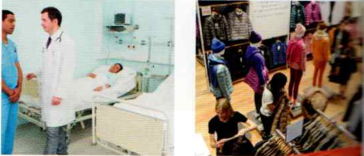
:
1: in a hospital 2: in a shop
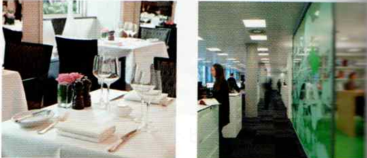
:
3: in a restaurant 4: in an office
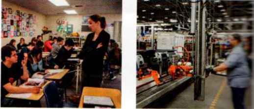
:
5: in a school 6: in a factory

:
7: at home 8: in the street
6.4 / 36
° julia ° intelligent ° hair’s ° blonde ° doesn’t ° wear ° does ° works ° hair ° matt ° teaches ° laura ° shoes ° horrible
Julia - Sara
Who’s that over there? It’s Anna, you know, the intelligent girl.
She’s very different! Her hair’s blonde. Yes, and she doesn’t wear glasses now.
What does she do? She’s a journalist. She works for a newspaper - The Times, I think.
Is she good? I don’t know. I don’t read The Times.
And who’s that man with grey hair? Is it Matt? Yes!
What does he do? He’s a teacher. He teaches French.
Where does he work? At our old school!
No! At our old school? Yes, and he’s married to Laura!
Laura? From our class? How awful! Is she here? Yes, she’s with Matt.
Very ugly shoes. Yes, horrible.
Laura: Sarah, Julia, hi! Great to see you!
Hi, Laura! Wow - I love your shoes - they’re beautiful...
6.5 / G 102 - Present simple: h/e, she, it
| [+] | [-] | [?] | [+] | [-] | ||
|---|---|---|---|---|---|---|
| HE | He works. | He doesn’t work. | Does he work? | Yes, he does. | No, he doesn’t. | |
| SHE | She works. | She doesn’t work. | Does she work? | Yes, she does. | No, she doesn’t. | |
| IT | It works. | It doesn’t work. | Does it work? | Yes, it does. | No, it doesn’t. |
Irregular forms: have -> has do -> does go -> goes
6.6 / 37 - Pronunciation -es
Circle the words where final -es = /iz/
does | finishes | goes | likes | lives | teaches | watches | writes
:
/dʌz/ /ˈfɪnɪʃɪz/ /ɡəʊz/ /laɪks/ /laɪvz/ /ˈtiːtʃɪz/ /ˈwɒtʃɪz/ /raɪts/
6.7 / 37 - Pronunciation -es
° finish ° teach ° newspapers
1/ I live in New York. He... : He lives in New York.
2/ I finish work at 8.00. She... : She finishes work at 8.00.
3/ I teach English. My brother... : My brother teaches English.
4/ I watch CNN. She... : She watches CNN.
5/ I write books. He... : He writes books.
6/ I go to university. John... : John goes to university.
7/ I don’t eat meat. My sister... not : My sister doesn’t eat meat.
8/ I don’t read newspapers. My husband... not : My husband doesn’t read newspapers.
9/ Do you work? He... : Does he work?
10/ Do you drink coffee? She... : Does she drink coffee?
6.8 / 37 - Do you speak English at work?
° banker ° star ° hotel ° Hitachi ° electronics ° Tokyo ° tell ° us ° Madrid ° because ° customers ° special ° dishes ° happy ° talk ° Paris ° multinational ° other ° visit ° them ° also ° answer ° meetings
Do you speak English at work?
What do these people have in common? A banker in Mexico City, a barman in a five-star hotel in Moscow, and a worker in the Hitachi electronics factory in Tokyo. They all speak English at work. Do you speak English at work? Write and tell us.
Antonio I work in a restaurant in Madrid. I’m a waiter. I speak English at work every day, because a lot of tourists come here. I help customers with the menu and I say what the special dishes are. They are very happy because they can talk to me in English. A lot of tourists don’t speak Spanish, but they usually speak English.
Charlotte I’m a receptionist and I work in an office in Paris. It’s a multinational company. When people from other countries visit the company I need to welcome them in English. I also need to answer the phone in English. When we have meetings we all speak in English, because it’s the language of the company.
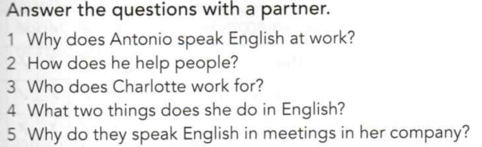
6.9-10 / 37
° job
What does he do? He’s a nurse.
Where does he work? He works in a hospital.
Does he speak English at work? No, he doesn’t.
Does he like his job? Yes, he does.
What does he do? (a nurse) : He’s a nurse.
Where does he work? (a hospital) : He works in a hospital.
Does he speak English at work? (no) : No, he doesn’t.
Does he like his job? (yes) : Yes, he does.
He’s a nurse. : What does he do?
He works in a hospital. : Where does he work?
No, he doesn’t. : Does he speak English at work?
Yes, he does. : Does he like his job?
6.11 / P 131 - Phrases to learn
° why
What does she do?
Where does he teach?
She’s a journalist.
She doesn’t wear glasses.
Her hair’s blonde.
He’s married to Lisa.
Great to see you.
intelligent
How awful!
I love your shoes,
a barman
a banker
customers
dishes
a multinational company
meetings
Why? Because...
6B
https://elt.oup.com/student/englishfile/beginner3/grammar/file06/grammar06_b01
https://elt.oup.com/student/englishfile/beginner3/grammar/file06/grammar06_b02
https://elt.oup.com/student/englishfile/beginner3/vocabulary/vocabulary01_03
https://elt.oup.com/student/englishfile/beginner3/vocabulary/vocabulary01_04
6.12 / 38 - Good morning, goodnight
° has ° years ° get ° night ° calls ° him ° sleep ° comes ° into ° feel ° bath ° turn ° avocado ° delicious ° leave ° mornings
Interviewer - Hannah
Hannah works for the BBC. She has a son Kit who’s three years old.
Hannah, what time do you usually get up? I get up at 7.00. But I also get up in the night, because Kit usually calls me. I tell him to sleep, but he usually comes into my bed.
Do you usually feel tired? Yes, I always feel tired!
Do you have a shower or a bath in the morning? I turn on the TV for Kit and then I have a bath in five minutes.
Do you always have breakfast? Yes, I need breakfast every day!
Where do you have it? I have it in a cafe on the way to work.
What do you have for breakfast? I have a coffee and sometimes I have some toast with avocado. It’s delicious.
What time do you go to work? The perfect time to leave the house is at 8.00, but we usually leave at twenty past eight.
Do you usually need to hurry in the morning? Yes, always!
Do you like mornings? Yes. I love mornings.
Why? Because I love my job, and I’m happy to go to work!
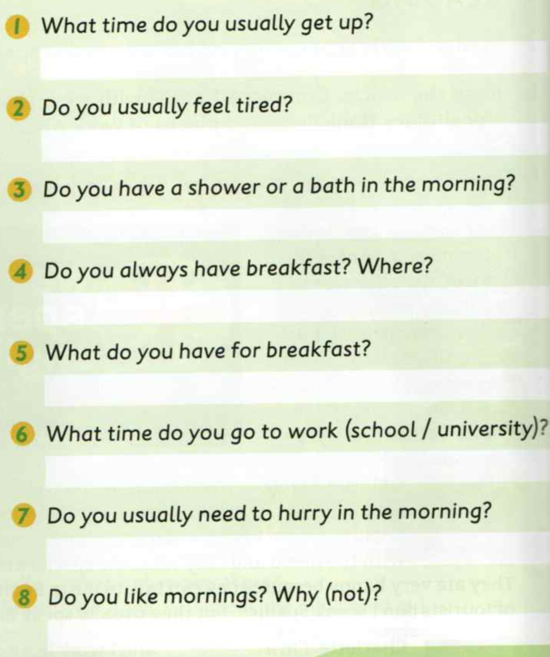
6.13 / 38
1: What time do you usually get up?
2: Do you usually feel tired?
3: Do you have a shower or a bath in the morning?
4: Do you always have breakfast? Where?
5: What do you have for breakfast?
6: What time do you go to work?
7: Do you usually need to hurry in the morning?
8: Do you like mornings? Why?
6.14 / V 125 - A typical day
° typical ° shopping ° gym ° make ° housework
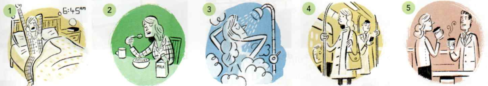
in the morning 1: get up 2: have breakfast 3: have a shower 4: go to work 5: have a coffee
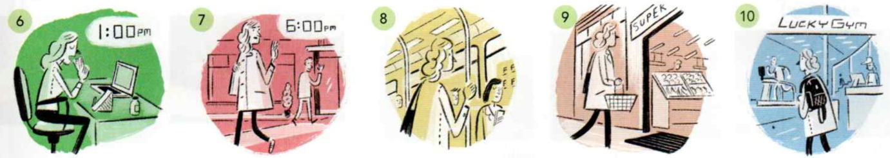
in the afternoon 6: have lunch 7: finish work 8: go home 9: go shopping 10: go to the gym
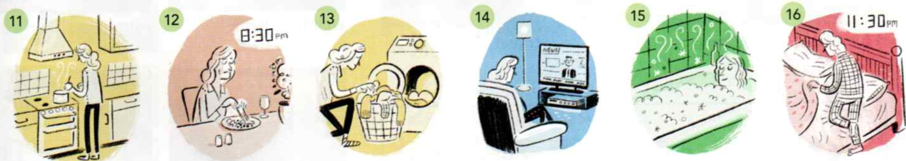
in the evening 11: make dinner 12: have dinner 13: do housework 14: watch TV 15: have a bath 16: go to bed
6.15 / V 125 - A typical day - listen
° gets ° makes
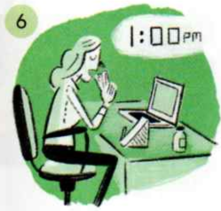
6/ Lisa has lunch at one o’clock.
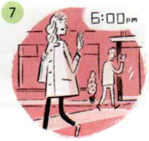
7/ She finishes work at six o’clock.
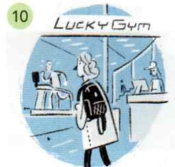
10/ She goes to the gym.
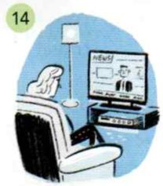
14/ She watches TV.
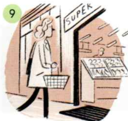
9/ She goes shopping.
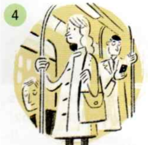
4/ She goes to work.
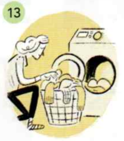
13/ She does housework.
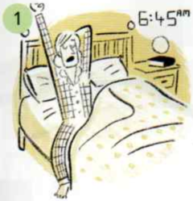
1/ She gets up at quarter to seven.
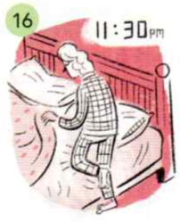
16/ She goes to bed at half past eleven.
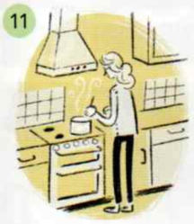
11/ She makes dinner.
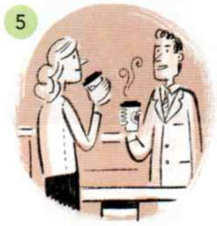
5/ She has a coffee.
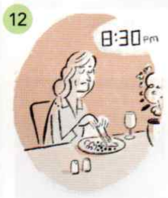
12/ She has dinner at half past eight.
6.16 / G 102 - Adverbs of frequency
° adverbs - příslovce ° frequency ° never ° eats
I always have breakfast. They usually finish work at 5.00. She sometimes watches TV in the evening. He never eats meat.
Does she usually go shopping on Saturday? What time do you usually get up?
6.17 / 39
° yacht ° young ° ju
yacht/j/ yes you young yellow /ju:/ usually student music beautiful
6.18 / 39
What time do you usually have lunch? At half past one. What time do you usually have dinner? At about eight o’clock. What time do you usually go to bed? At half past eleven.
6.19 / P 131
° tour ° guide ° apartment ° subway ° omelette
Are you a morning person? What time do you get up? At eight o’clock. He gets up at about 9.30. feel tired on the way to work after work every morning then a tour guide an apartment the subway an omelette It’s delicious.
6.20 / 41
° um ° maybe ° hanna ° stockport ° outside ° being ° during ° week ° quite ° before ° weekends
1 I = interviewer, J = John 1: What do you usually have for breakfast? J Um, just toast and a cup of tea, maybe.
2 I = interviewer, H = Hanna I Do you live in a house or a flat? H It’s a house. I Where is it? H It’s in Stockport, outside Manchester.
3 I = interviewer, L = Lisa I Do you have children? L I have children, yes I do. I have one son. He is sixteen.
4 I = interviewer, S = Susan I What do you do? 5: I’m retired. I Do you like being retired? S I do...very much.
5 I = interviewer, K = Kieran I What time do you get up during the week? K Um, quite early. Usually before eight a.m. I And at weekends? K At the weekends, much later. About ten a.m.